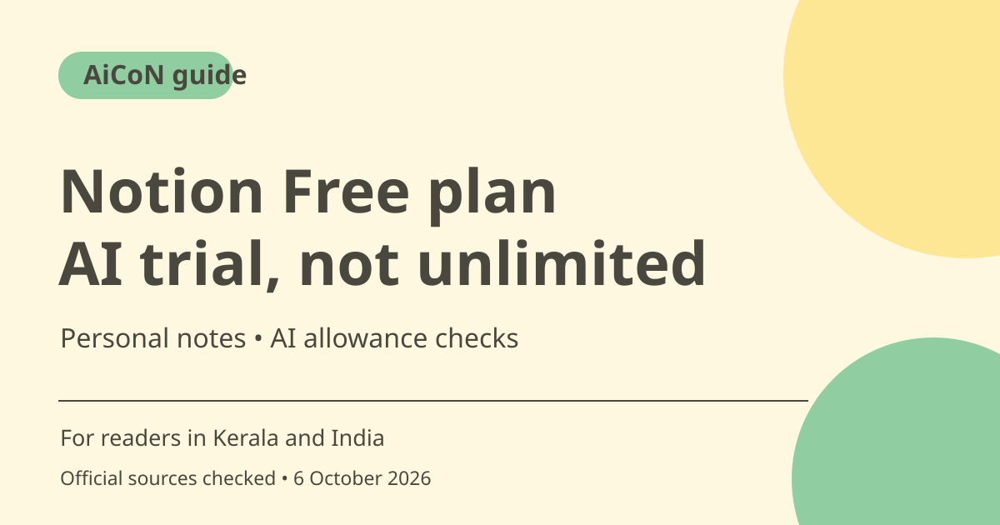

Notion Free and AI trial: limits before you upgrade
Notion Free is a workspace for personal notes, planning and databases. It includes a limited trial of Notion AI, not ongoing free AI access. Plus also lists an AI trial; continued AI features are tied to Business or Enterprise under current official help.

What is Notion?
Notion organises information into pages and blocks such as text, checklists, tables and databases. Its pricing page describes Free for personal projects and life. You can use the workspace without treating every paid AI feature as part of Free. Start with the organisation task you actually need rather than buying a plan because of an AI demonstration.
Who is it useful for in Kerala and India?
A student can organise course notes, a freelancer can track work and a small team can maintain shared project pages. These are possible workflows, not guarantees of storage or team access on Free. The pricing page says individual Free workspaces have unlimited pages and blocks, while workspaces with two or more members have a block limit.
What does the AI trial mean?
Official help says Free and Plus users get a limited number of complimentary AI responses. An AI action that returns a response counts toward that allowance, including new content, edits, AI blocks, autofill and questions. Clicking Try again uses another response. The checked help does not give a universal exact number, so this guide does not claim 20 responses or a monthly refill.
Business AI is still subject to limits
Business and Enterprise include Notion AI under the current help, with usage allowances for certain features. Premium models require Notion credits and administrator activation. Custom Agents are a separate credit-based product shown on the pricing page. A paid AI plan should not be described as unlimited access to every model and automation.
Education access is a separate offer
The pricing FAQ says a one-member Plus plan is free for eligible students and educators using a qualifying school email. It notes that eligible domains are not limited to .edu. That does not make Business AI free or mean every institution is eligible. Check your school email and current education terms before relying on the offer.
Privacy and AI context
Notion says information used for AI is shared with AI subprocessors to provide features, with agreements prohibiting training on customer data. Its pricing FAQ says its models do not train on your data unless you opt in to a sharing request. These are provider policies, not a guarantee that sensitive information never leaves your workspace. Review employer or school rules before entering confidential material.
How to use it, step by step
- Open notion.com through its official pricing page and compare Free with the features you need.
- Create or sign in to a personal workspace and begin with a simple page, checklist or database. Check whether you are adding members or just using it individually.
- For an AI test on non-sensitive text, highlight a section or press space in a page as described by the official AI help.
- Ask for a specific result such as a summary or outline. Check the answer against the original content.
- Accept or discard the changes. Use Try again only when needed because another response counts toward the trial.
- When the trial is exhausted, read the upgrade prompt. Current help says continued AI requires Business or Enterprise; Plus is not a promise of ongoing AI.
- Before upgrading, have the workspace owner review seats, billing period, AI allowance, premium-model credits and any Custom Agent cost. Do not add connected services unless needed and permitted.
Cost, eligibility and limits
| Free | ₹0 for the Free plan; limited AI trial. Individual pages and blocks are unlimited, but Free team workspaces have a block limit. |
|---|---|
| Plus and Business references | Pricing displays US$10 and US$20 per member per month. At a rough editorial ₹95/USD assumption, these are about ₹950 and ₹1,900. Billing mode was not reliably established in the fetched text; confirm the monthly or annual charge before paying. |
| Custom Agents | Pricing says free to try, then US$10 per 1,000 monthly Notion credits, about ₹950 at the same rough estimate. Check separate billing and consumption rules. |
| Education | Eligible students and educators may get a one-member Plus plan through school-email eligibility. This does not establish free Business AI. |
Frequently asked questions
Does Free include unlimited AI?
No. It includes limited complimentary responses.
Does upgrading to Plus give ongoing AI?
Current official help says Free and Plus get trials, while continued AI is available on Business and Enterprise.
Does Try again use the allowance?
Yes. The complimentary-response help counts it as another AI response.
Official sources
Checked 6 October 2026. Features and prices can change. This is a guide, not a personal product test.